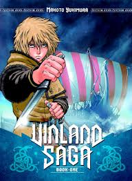

Blue lock
На Чемпіонаті світу 2018 року Японія вилетіла з 1/8 фіналу… Біль, крах мрій, розчарування — це переживали уболівальники. А як щодо тих, для кого футбольний трофей був метою? Як щодо гравців, тренерських команд, функціонерів зрештою? Вони діятимуть, вони зроблять все, щоб таких провалів більше не траплялося.

vinland saga
Суворий Вінланд – віддалений куточок Північної Америки, якого першими відкрили вікінги, мужні скандинавські воїни, звиклі до суворих умов. Вони мали б триматись разом, плечем до плеча. Тільки буває і не так.форма голосу
Глава 0 - сингл - це історія глухої дівчинки, яка намагається вчитися на одному рівні з усіма, але в кінці кінців піддається цькуванню. У більш глибокому розумінні - це манга про те, як люди часто не чують один одного, не можуть спілкуватися, а тому не розуміють один одного і відокремлюються.Тільки я візьму новий рівень
Одного разу в світі відкрився портал, ведучий в паралельні вимірювання. Це пробудило монстрів підземелля, які могли б захопити нашу планету. Проте одночасно з цим, у деяких людей з'явилися надприродні здібності, які зробили їх здатними до опору проти небезпечних істот. Таких людей називають «мисливцями»Ця порцелянова лялька закохалася
Ексцентрична красуня Марін Кітаґава завжди в центрі уваги. Через це її однокласник, Вакана Ґоджьо, вважав Марін людиною з іншого світу. Коли Вакана, який прагне стати майстром ляльок Хіна, після уроків шив одяг у школі, до класу зайшла дівчина, яку він найменше очікував там побачити...аттелє чарівних капелюхів
Одного разу селище, в якому проживає дівчинка, відвідує чаклун на ім'я Кіфл. Коко потайки спостерігає за тим, як він чаклує, і дізнається про справжню природу магії. Вона згадала, що багато років тому одна таємнича незнайомка подарувала їй книгу по магії і чорнильна перо для відтворення магічних фігур. Дівчинка потайки починає вчитися чаклувати, але це призводить до трагічних подій ...Атака титанів
Світ людей упав під сокрущающей міццю Титанів. Принісши в жертву свою свободу, людство сховалося в обнесених високими стінами містах, в надії убезпечити тих, що вижили. Але в один страшний день з`явився колосальний Титан, що перевершує розмірами навіть міські стіни. І тендітна Надія розсипалася в прах. Знову почалася відчайдушна битва за виживання..gif)